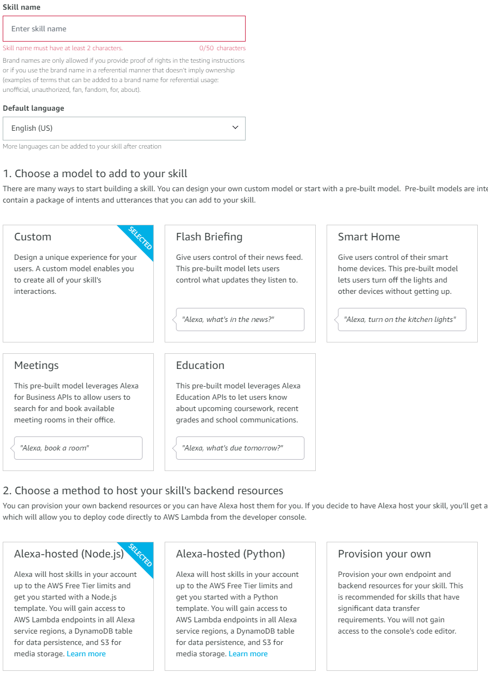
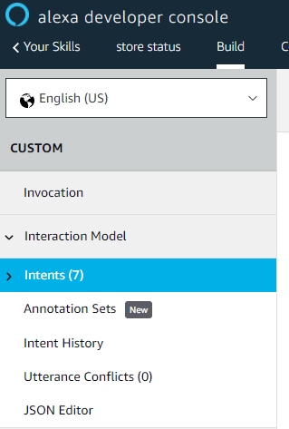
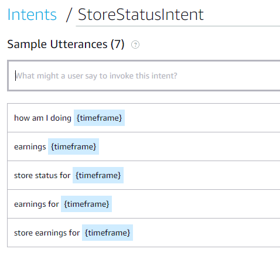
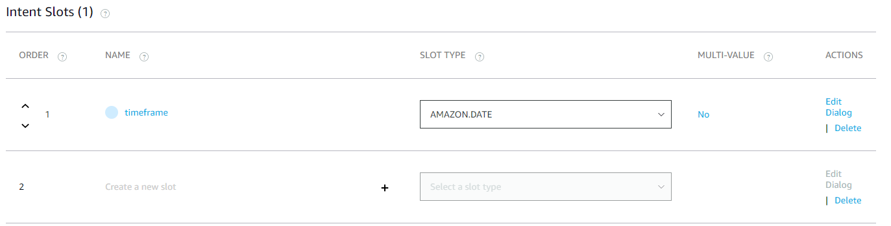

Ordercloud Voice Assistant
Use voice commands to integrate with OrderCloud
Creating your Alexa Skill
Step 1: Create Skill
Once you login to the Alexa Developer Console, select "Create skill"
Name your skill in the "Skill Name" box, while leaving the default
language as your locale
Choose Alexa-Hosted (Node.js) for backend resources
Once those are selected, click "Create Skill" at the top of the page.

Step 2:
Once the skill is created, under "Build" you'll see autogenerated
intents. This will be what phrases Alexa will redirect to your skill.

The more phrases you add, the more likely Alexa is to route your
requests correctly. Since natural language varies, try adding as many
variations as possible. If you need to collect information from the
user before triggering your skill, you can add slots to your intent.
As you see below, we are collecting a timeframe slot from the user

Adding an Intent Slot
To collect information from the user during the skill trigger, add a
Slot right below your intents. From there you can create a slot and
tell your intent what the type is (Date, number, string, etc)
